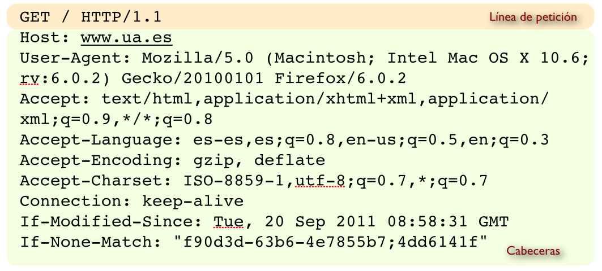
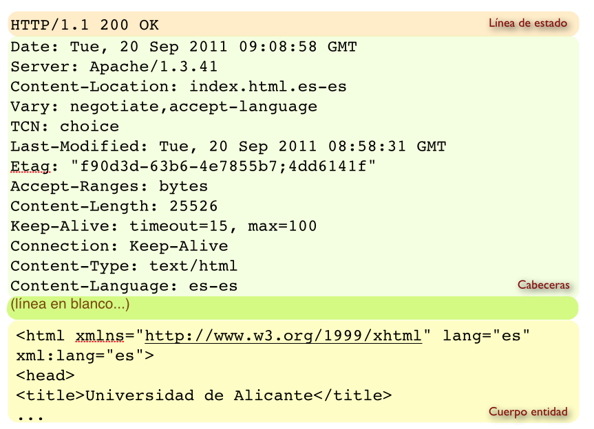
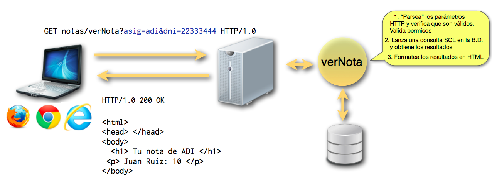
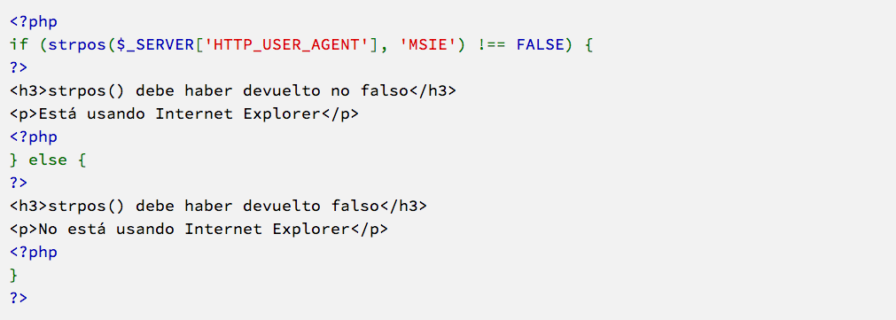
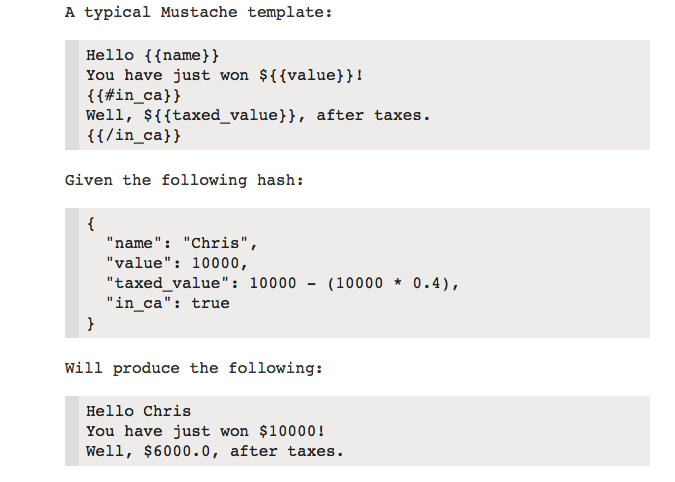
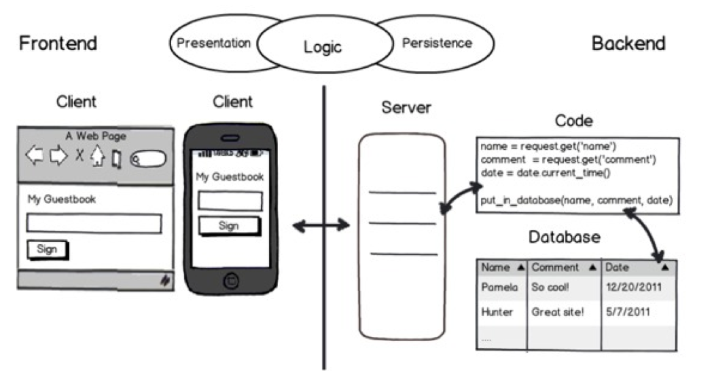
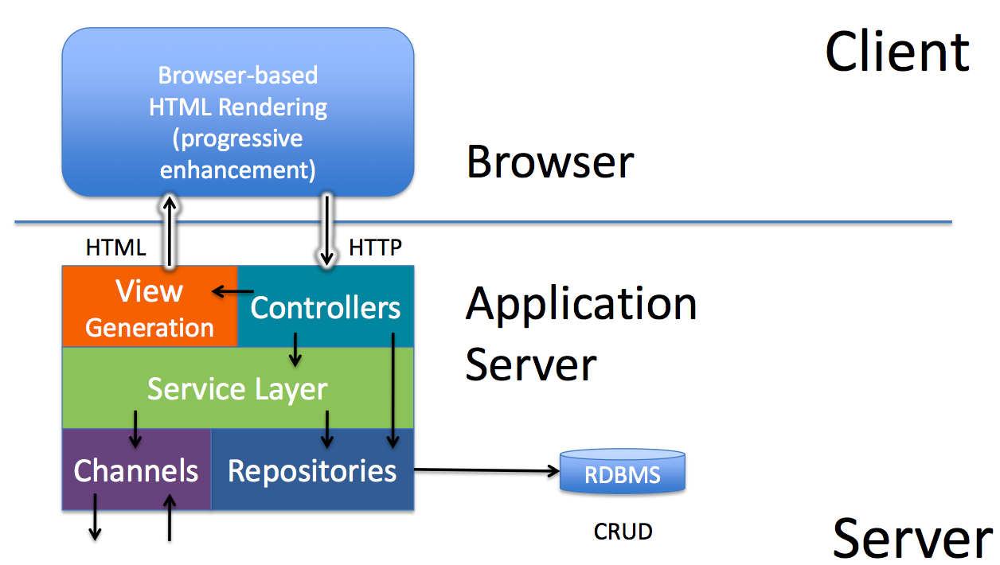
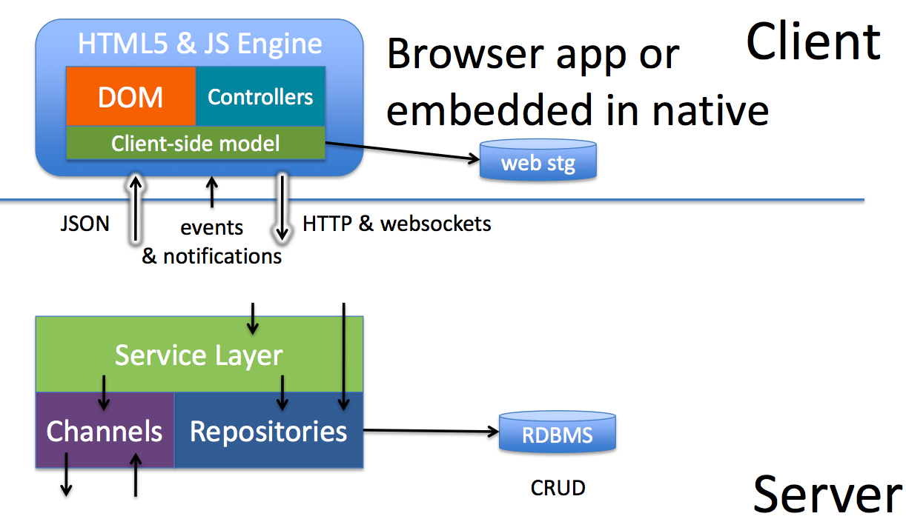
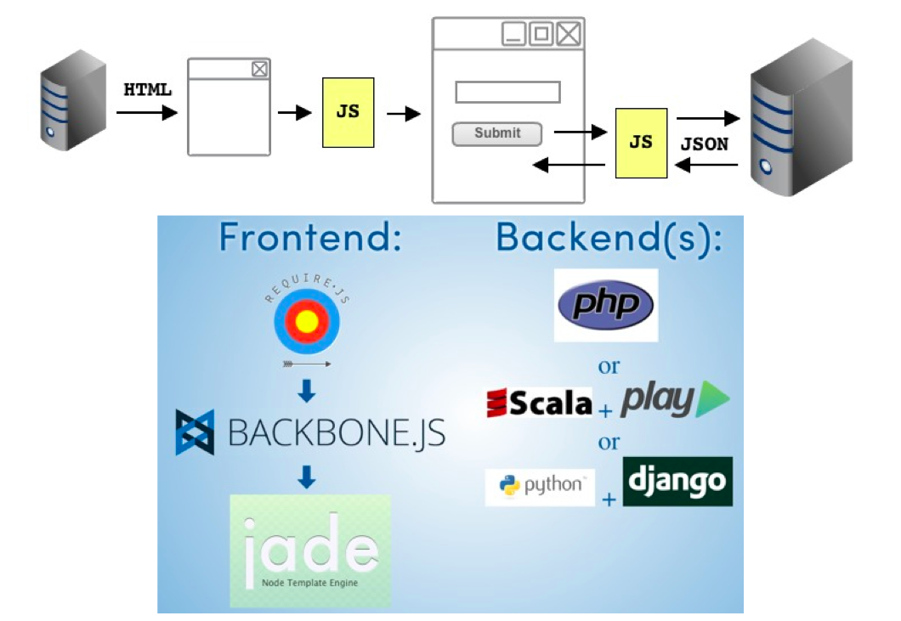

Tema 1
HTTP y aplicaciones web
Indice
- HTTP para sitios web estáticos
- HTTP básico para aplicaciones web
- Single Page Applications
- APIs REST
1.1. HTTP para sitios web estáticos
Petición/respuesta HTTP
- Un servidor web está a la escucha por un puerto, aceptando peticiones y devolviendo respuestas según el protocolo HTTP
- El protocolo especifica la sintaxis de peticiones y respuestas
- El intercambio de información se hace en modo texto
Petición HTTP
Respuesta HTTP
1 página = N recursos
- Una sola página contiene normalmente múltiples recursos (imágenes, código Javascript, flash,...). Cada uno de ellos requiere una transacción HTTP separada
Métodos de petición
- GET: obtener un recurso
- Otros métodos: PUT: actualizar recurso, DELETE: eliminar recurso
- No están permitidos en la mayoría de recursos por motivos evidentes
- De hecho, los navegadores no los permiten en el flujo de uso normal, se necesita Javascript para lanzar estos métodos
Códigos de estado
- Diferentes rangos numéricos indican distintos tipos de resultados
- 1xx informational
- 2xx success (p.ej.
200 OK) - 3xx redirection (p. ej.
301 MOVED PERMANENTLY) - 4xx client error (p. ej.
404 NOT FOUND,400 BAD REQUEST,403 FORBIDDEN,418 I’M A TEAPOT:) ) - 5xx server error
- Consultar más en http://httpstatus.es
- En la actualidad la mayoría son ignorados por el navegador, que se limita a mostrar el cuerpo de la respuesta.
HTTP es un protocolo sin estado
- No se guardan datos permanentes entre una petición/respuesta y la siguiente
- Sin embargo, se debería recordar que estamos autentificados, qué contiene nuestro carrito de la compra, etc...
- Ya veremos soluciones a este "dilema"

1.2 HTTP básico para aplicaciones web
Aplicaciones web y HTTP
- Una aplicación web es una colección de "programitas" o "rutinas". A cada uno se accede a través de una URL
-
La comunicación con las rutinas se hace a través de HTTP
- Una petición GET ya no significa "devuelve un recurso", sino "ejecuta un programa y devuelve el resultado"
- El código de estado se puede interpretar como el resultado de la ejecución. p. ej, un 500 se debe a que el programa ha abortado
- Al igual que en línea de comandos podemos pasar parámetros
Aplicación web para consultar notas
GET vs. POST
- En aplicaciones "clásicas" tienen la misma semántica, ejecutar un programa remoto pasándole datos en forma
parametro=valor¶metro2=valor2... - Algunas diferencias
- Los parámetros en GET se ven en la barra de direcciones del navegador
- Los parámetros en POST tienen longitud ilimitada
¿De dónde salen los parámetros?
Plantillas HTML en el servidor
- Facilitan la tarea de generar HTML dinámicamente, ya que generar todo el HTML a base de "printfs" sería engorroso
- Mezclan bloques de HTML con sentencias de un lenguaje de programación o con instrucciones especiales de control de flujo
- Ejemplos
PHP
Mustache
Javascript
- El código se descarga junto con el HTML y se interpreta en el navegador después de la petición/respuesta HTTP
- Inicialmente se usaba para pequeños cálculos, validación de formularios, efectos curiosos
Frontend vs. Backend
Con Javascript aparece el mundo del desarrollo frontend
Charla: "Picking a Technology Stack", Pamela Fox
Arquitectura típica de una aplicación clásica
Charla: The New Application Architectures, Adrian Colyer
1.3 Aplicaciones con AJAX
AJAX
- Varias tecnologías (sobre todo JS) que permiten hacer peticiones al servidor sin refrescar la página completa
- Se puede actualizar solo parte del HTML con datos procedentes del servidor
- meneame (no AJAX) vs meneame (AJAX)
Single Page Applications
- Gracias a AJAX y a Javascript nos podemos llevar casi todo el código de la aplicación al navegador, convirtiendo el servidor en un API remoto para guardar/recuperar datos.
- La aplicación es un único HTML y los cambios en el interfaz se hacen con JS, no navegando a otras páginas
Posible arquitectura de una S.P.A.
Ejemplo: Coursera
Presentación: Frontend architectures, Pamela Fox
Ninguna tecnología puede ser una panacea, y las S.P.A. no son una excepción
1.4 APIs REST
Recapitulando: aplicaciones "clásicas"
- Suelen usar plantillas del servidor
- Las URL suelen ser verbos, que indican acciones:
ponerNota,listarAlumnos - Los datos se pasan en formato
nombre=valor:orden=asc&convoc=jul2014
Aplicaciones REST vs. "Clásicas"
- REST puede verse como un intento de volver a los principios de HTTP
- En lugar de llamar a programas, operar sobre recursos, que no van a ser páginas HTML sino entidades de nuestra aplicación: alumnos, notas, asignaturas
- El tipo de operación se especifica con el método HTTP: PUT sobre una nota significa "actualizar una nota".
Recursos en REST
- Cada recurso se identifica con una URL única
- Los recursos, y por tanto las URLs se suelen organizar jerárquicamente
/* todos los alumnos */
http://miaplicacion.com/alumnos
/* El alumno con DNI 12345678J */
http://miaplicacion.com/alumnos/12345678J/
/* La nota de julio de 2014 de ADI (cód 34039) del alumno anterior */
http://miaplicacion.com/alumnos/12345678J/notas/34039/jul2014
Métodos HTTP en REST
- Los métodos POST/GET/PUT/DELETE se asocian respectivamente con las operaciones Crear/Leer/Actualizar/Borrar (CRUD), respectivamente
- Así, obtener el listado de alumnos sería hacer
GET miaplicacion.com/alumnos/ - Solo nos falta un formato estandarizado para los datos
Intercambio de datos en REST
- JSON: formato estándar e independiente del lenguaje para representar objetos. Originario de Javascript
- Es mucho más legible y flexible que el
nombre=valor&nombre2=valor2.... Se pueden representar objetos compuestos de otros, arrays, ...
{
nombre: "Pepe Pérez",
edad: 19,
direccion: {
calle: "Pez",
num: 15}
}
¿Por qué REST en lugar de otras alternativas?
REST no es más que un conjunto de convenciones que podrían ser de otro modo
¿Por qué REST en lugar de otras alternativas? (II)
Para diseñar un buen API para los servicios necesitamos usar algo que la gente conozca. Así que, aunque no hay nada superior desde el punto de vista técnico en REST y JSON sobre usar RPC con un protocolo de nivel más bajo, usar algo que la gente comprenda bien [...] ayuda mucho en el diseño del API
S.P.A. y REST
- Casi siempre los APIs que usan las S.P.A. son de tipo REST
- También se podrían hacer APIs web con URLs clásicas (verbos), solo usando GET/POST y con datos en formato
parámetro=valor(¡Se han hecho "siempre"!)... solo que no serían tan cool
Y siempre hay que ser cool